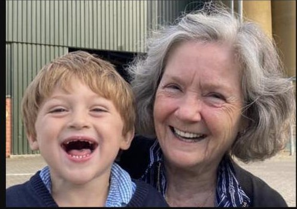
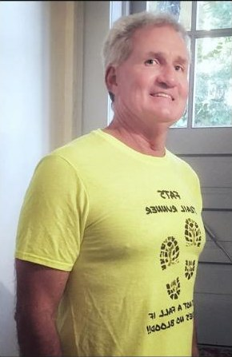

Joe Weaver is THE BEST at fitness training, and a remarkable instructor in holistic fitness from breath to incorporation of daily routine tips. Wholeheartedly recommend him!!!
Dr. Martha Batorski
I help folks over 60 build the strength, balance and endurance needed to maintain an active life.
I've been trained as an Active Aging Specialist and lead small group classes via zoom or in person at my Fairfield, Iowa studio.
There are advantages in having a trainer who understands the needs of an older body.
Contact MeThat's why I limit classes to 10 participants so I can adjust exercises for each person's needs.
We use resistance bands and bodyweight exercises instead of free weights.
We practice special warm up and cool down routines before, during and after each class.
Because if it's not fun you won't keep doing it. And if you don't keep doing it you won't get results. So, we play our favorite tunes from the 50's, 60's, 70's.
And we joke around a lot! This is not a bootcamp.
At our age we need to build and maintain: Strength, Balance, Endurance, Flexibility, and Mobility. Each workout is structured to optimize those needs. We also use a special breathing technique that makes exercise easier and more enjoyable.
Here's a sample of my zoom class
Joe Weaver is THE BEST at fitness training, and a remarkable instructor in holistic fitness from breath to incorporation of daily routine tips. Wholeheartedly recommend him!!!
I was skeptical about using bands instead of weights. But it turns out I get just as good a workout but without the risk of injuring myself. We have a wonderful community in class, and we're having a lot of fun.

The years I have trained with Joe have been extremely productive.
He really understands how the body “works” in our age group
and has helped me to significantly enhance my strength, stamina,
and even “spiritual“ calm and well-being via the exercise and dance.

I wanted an exercise program that would give me more strength
and help with my balance. This has done a remarkable job.
It's fun, yet very demanding at times.
And I really feel I'm getting the workout I need. It's been great!
I'm a diabetic, I have a hip replacement and I was concerned about losing muscle mass. Now with Joe's program I'm gaining strength, I'm gaining endurance and I'm losing pain. And I'm having fun doing this.
I avoided exercise for years. Nothing made me happy.
Then after a three year illness I found Joe.
The class flies by in the privacy of my home and I can't wait for the next one.
I'm getting stronger and more flexible and thinking so positively
about my body again at 72.
He never lets you get hurt or overdo it.
The variety is wonderful and never boring.
I've had MS for over 50 years, and my biggest problem has been fatigue. I tried other training systems, but didn't start to gain strength or change my stamina till I started training with Joe. Over the last two years with Joe the change in my body has been remarkable. It's been a life changer. He understands the aging body and makes the workouts fun!